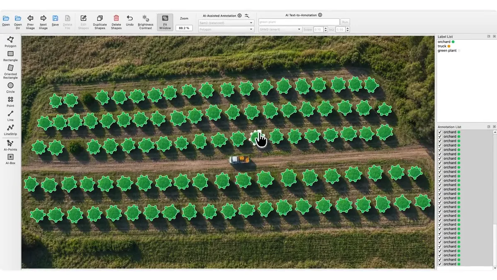

Machine Learning
Foundational understanding of how labeled data supports model training.
HELLO, I'M
A detail-oriented and analytical aspiring professional interested in software testing, image annotation, and machine learning. I enjoy learning new tools and helping produce reliable software and high-quality datasets.
A LITTLE ABOUT ME
I'm an aspiring Quality Engineer and Data Annotator with foundational knowledge of software testing, image annotation, and machine learning. I completed Quality Engineering bootcamp and training at Accenture and gained manufacturing and quality-control exposure during my Process Engineering internship at Integrated Micro-Electronics, Inc. (IMI).
I'm eager to keep developing my technical skills, follow clear guidelines, and contribute to accurate testing and high-quality data. I value attention to detail, teamwork, and continuous improvement.
Foundational understanding of how labeled data supports model training.
Hands-on use of LabelMe for image annotation. Add your specific techniques below.
Training in software testing fundamentals, test cases, and defect identification.
Internship exposure to manufacturing processes and assisting QA with circuit checks.
WHAT I'M BUILDING
SELECTED WORK
These projects demonstrate my developing technical skills, attention to detail, and commitment to learning industry-relevant tools and practices.

DATA ANNOTATION
A learning exercise exploring image annotation using LabelMe, focusing on accurate object labeling, annotation consistency, and structured data preparation to support machine learning and computer vision workflows.
QUALITY ENGINEERING
Applying my knowledge of software testing fundamentals, including test scenario identification, test case preparation, result validation, and defect reporting to support software quality and reliability.
ANNOTATED DATA → MACHINE LEARNING
MACHINE LEARNING
Annotated data supports machine learning by providing labeled examples that help models recognize patterns, classify information, and make accurate predictions. High-quality annotations improve a model’s accuracy, reliability, and overall performance.
MY BACKGROUND
JOB EXPERIENCE
Completed training focused on software testing foundations and quality assurance practices.
JUNE-DECEMBER 2025
INTERNSHIP
Gained exposure to manufacturing operations and quality inspection support.
2024
EDUCATION
2020-2024
LET'S CONNECT
I'm open to entry-level opportunities in data annotation, quality engineering, and software testing.